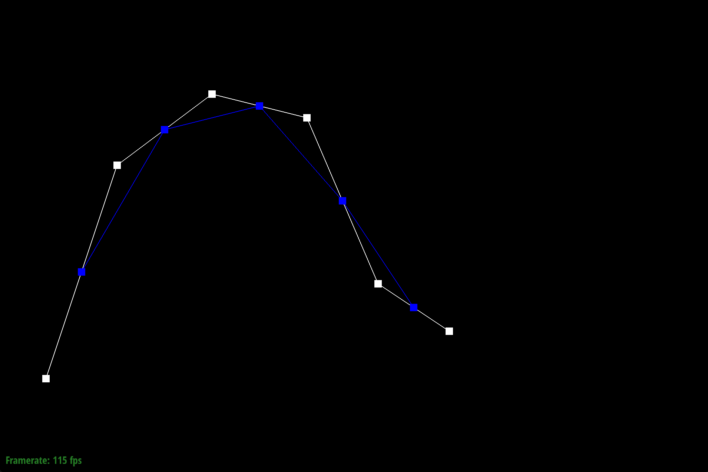
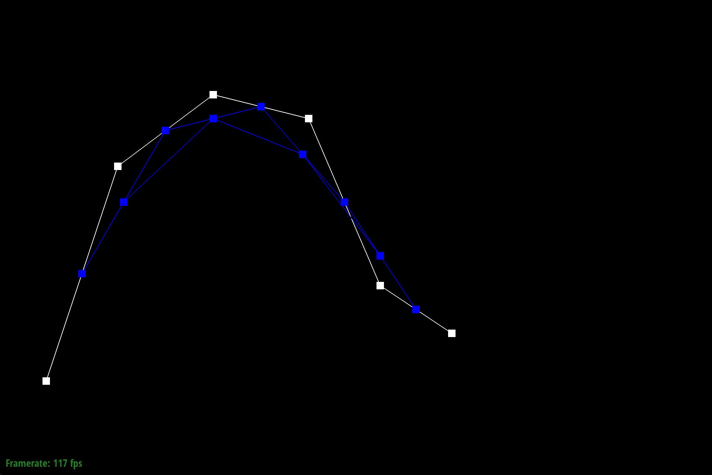
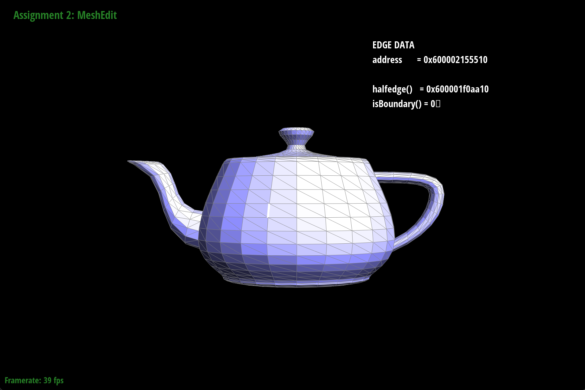
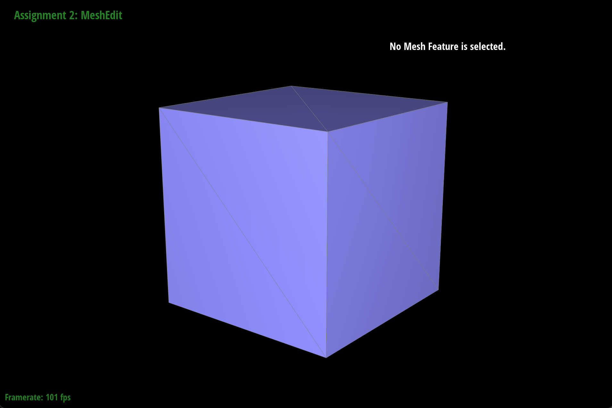

CS184/284A Summer 2025 Homework 2 Write-Up
Link to webpage: https://anishaiyer27.github.io/hw-webpages-anishaiyer/hw2/index.html
Link to GitHub repository: https://github.com/cal-cs184/hw2-meshedit-hw2aiyer
Overview
In this homework, I worked on geometric algorithms for Bézier curves and surfaces, along with mesh editing operations using the half-edge data structure. The first part was about implementing de Casteljau’s algorithm to evaluate Bézier curves and then extending the same idea to Bézier surfaces through separable 1D subdivision. The second part focused on working with triangle meshes, computing area-weighted vertex normals for smoother shading, implementing edge flip and edge split operations to change the mesh topology, and applying Loop subdivision to upsample the mesh. This assignment helped me improve my intuition for how basic computational geometry concepts show up in computer graphics. It was especially interesting to see how something as simple as repeated interpolation can generate smooth curves and surfaces, and how local mesh operations can be combined to build more advanced modeling techniques.Section I: Bezier Curves and Surfaces
Part 1: Bezier curves with 1D de Casteljau subdivision
De Casteljau’s algorithm is a recursive way to evaluate a Bézier curve at a specific parameter t. It works by repeatedly interpolating between consecutive control points. Each step reduces the number of points by one, and after enough steps, a single point remains, which is the point on the curve at that t value.
In my implementation, I start with a list of control points and a parameter t. For each adjacent pair of points, I compute a new point as (1-t) * p_i + t * p_{i+1}. This process continues recursively until only one point remains, which is the point on the Bezier curve at parameter t.
The beauty of this algorithm lies in its geometric interpretation. Each level of subdivision represents a geometric construction that visually demonstrates how the curve is formed from its control polygon. Visually, we can see how the control polygon gradually “shrinks” and pulls the curve into shape.
Screenshots of each step/level of evaluation (using a 6-control-point Bezier curve):
|
|

|
|

|

|
|
|
|
Screenshot of a slightly different Bezier curve with modified control points and parameter t:

Part 2: Bezier surfaces with separable 1D de Casteljau
Bezier surfaces extend the concept of Bezier curves to two dimensions using a tensor product approach. A Bezier surface is defined by a grid of control points and evaluated using two parameters u and v. My implementation uses separable 1D de Casteljau subdivision. First, we apply de Casteljau's algorithm along one parametric direction (say u) for each row of control points, then we apply it again along the other direction (v) using the results from the first step. This approach reduces the 2D surface evaluation problem to multiple 1D curve evaluations.
For each row of the control point grid, we use de Casteljau with parameter u to get intermediate points. Then, we collect these intermediate points to form a new curve. Finally, we apply de Casteljau again with parameter v to this new curve to get the final surface point. This separable approach is both computationally efficient and conceptually clear.Screenshot of bez/teapot.bez evaluated by your implementation:

Section II: Triangle Meshes and Half-Edge Data Structure
Part 3: Area-weighted vertex normals
Area-weighted vertex normals provide smooth shading for triangle meshes by computing a normal vector at each vertex that represents the average orientation of all adjacent faces, weighted by their areas. This technique helps to create a more visually appealing representation of the surface by ensuring that the shading is influenced more by larger, more significant faces rather than smaller ones. This implementation iterates through all faces incident to a vertex using the half-edge data structure. For each face, I compute the face normal using the cross product of two edge vectors, and the face area using half the magnitude of this cross product. The vertex normal is then the sum of all face normals weighted by their respective areas, normalized to unit length.
With this approach, I am able to produce visually pleasing smooth shading that avoids sharp lighting transitions because larger faces have more influence on the vertex normal, which better represents the local surface geometry. The area weighting prevents small triangles from having disproportionate influence on the shading, resulting in more natural-looking surfaces.
Screenshots of dae/teapot.dae comparing teapot shading with and without vertex normals:

|
|
Part 4: Edge flip
Edge flip is a fundamental mesh operation that changes the local topology by "flipping" an edge between two adjacent triangles. Given an edge connecting two vertices, the flip operation removes this edge and creates a new edge connecting the two vertices that were previously unconnected.
My implementation uses the half-edge data structure to carefully reassign all the pointers involved in the operation. The key is to identify all the mesh elements (vertices, edges, faces, half-edges) that will be affected and systematically update their connectivity. I first collect all the relevant mesh elements, then reassign the half-edge pointers to reflect the new topology after the flip.
This operation is crucial for mesh processing algorithms and maintains the manifold property of the mesh while allowing local topology changes. It's particularly useful in mesh optimization and subdivision algorithms.
Screenshots of the teapot before and after some edge flips:
|
|

|
Debugging journey:
Edge flip was a particularly challenging operation to implement robustly. Early versions of my code suffered from segmentation faults and mesh validation errors, often due to updating pointers in the wrong order or missing key assignments. To address these issues, I adopted a systematic approach: I carefully diagrammed the half-edge relationships, collected all relevant mesh elements before making any changes, and updated pointers in a controlled sequence. This methodical process helped prevent breaking the mesh structure and made debugging more manageable.
As the project progressed, I realized the importance of consistency between mesh operations. I refactored flipEdge to match the conventions and variable naming used in splitEdge, which improved readability and reduced errors. Through comparison with reference solutions, I identified that a more exhaustive approach was needed—updating all ten relevant halfedges and checking boundaries for each. Incorporating these additional checks and assignments made my implementation more robust and less prone to subtle mesh errors, especially in complex mesh configurations.
Throughout the debugging process, I relied on mesh validation after every operation and interactive testing on a variety of meshes. When patch failures occurred during code refactoring, I diagnosed the issues by comparing code context and manually editing the code to match the expected structure. This experience reinforced the value of systematic pointer management, defensive programming, and incremental validation. By maintaining a professional and methodical approach, I was able to achieve a reliable and maintainable solution for edge flips that performs well even under repeated subdivision and editing.
Part 5: Edge split
Edge split is a fundamental mesh operation that inserts a new vertex at the midpoint of an edge and retriangulates the local area to maintain a valid mesh. This operation increases mesh resolution locally while preserving the overall shape and topology. My implementation first collects all mesh elements around the target edge, then creates the new vertex, edges, faces, and halfedges needed for the split. I update all pointers carefully using a combination of setNeighbors and explicit assignments. I ensure that each vertex's outgoing halfedge points to a halfedge where h->vertex() == v, which is crucial for mesh consistency.
To debug, I added checks after every split and flip operation, printing errors whenever mesh invariants like “Vertex halfedge not outgoing” or “Halfedge twin mismatch” occurred. This helped me trace pointer assignments and fix subtle bugs by verifying that all incident halfedges for each vertex were correctly set. Removing unnecessary null pointer checks once stable improved the code clarity. I also used a robust loop to assign outgoing halfedges, which significantly improved stability. I validated the mesh interactively and with automated checks after every update to ensure no segmentation faults or pointer errors occurred. The implementation handles only interior edges by default, but I included boundary edge splitting support as extra credit and verified it with additional tests and screenshots
Edge split is essential for adaptive mesh refinement and subdivision algorithms. Unlike edge flip, which only modifies connectivity, edge split increases vertex and face counts, allowing more geometric detail and finer control over mesh shape.
Screenshots of a mesh before and after some edge splits:
|

|

|
Screenshots of a mesh before and after combination of edge splits and flips:
|
|

|
Debugging journey:
Implementing splitEdge turned out to be far more challenging than I initially expected. While my first implementation created the new vertex and halfedge elements, I kept encountering mesh validation errors such as “Vertex halfedge not outgoing” and “Halfedge twin mismatch” after performing the split. Debugging these issues required a deep dive into the half-edge data structure, very careful tracking of every pointer assignment, and frequent reference to lecture slides and diagrams to clarify the relationships between halfedges, vertices, edges, and faces.
Through iterative fixes, I addressed problems caused by reused halfedges and incorrectly assigned twin relationships. I realized that hardcoding which outgoing halfedge each vertex should point to was fragile and prone to errors. The real breakthrough came when I replaced this with a robust loop that searches each vertex’s incident halfedges for a valid outgoing one, ensuring correctness across different mesh configurations. To help catch subtle issues earlier, I also added defensive checks and debug output to verify assumptions as the mesh was updated.
Throughout the process, I found that keeping consistent code conventions between splitEdge and flipEdge significantly simplified debugging. I also learned to precompute data and batch edge operations before modifying the mesh, which reduced iterator invalidation and made the algorithm more robust. When patch failures happened during refactoring, I resolved them by carefully comparing code context and restructuring it to match expected patterns.
This experience reinforced how critical systematic pointer management, defensive programming, and incremental validation are when working with complex data structures like half-edge meshes. After many late nights of careful debugging and testing, supported by diagramming and revisiting course materials, the mesh operations now run reliably and pass all validation checks—even during loop subdivision and interactive editing.
Part 6: Loop subdivision for mesh upsampling
Briefly explain how you implemented loop subdivision:
Loop subdivision is a surface subdivision scheme that creates smoother, higher-resolution meshes through repeated refinement. The algorithm combines topology refinement (splitting every triangle into four) with geometric smoothing using weighted averages of neighboring vertices.
My implementation follows the Loop subdivision rules: first, I compute new positions for existing vertices using a weighted average of their neighbors. Next, I calculate positions for new vertices that will be inserted at edge midpoints. Then, I split every edge to insert these new vertices, and finally, flip certain edges to achieve the correct connectivity pattern. The weights are chosen to ensure the limiting surface is smooth and visually appealing.
Initially, my implementation was very straightforward but extremely slow on complex meshes. To make it usable for interactive editing, I had to optimize it significantly. I began by caching vertex degrees and neighbors to avoid redundant traversals, which reduced unnecessary computations. I also pre-computed and stored all new vertex positions before modifying the mesh, ensuring that data consistency was maintained throughout the process. Direct boundary checks replaced costly iterative methods, and I hardcoded special weight cases for vertices with 3, 4, or 6 neighbors to speed up calculations. Batching edge operations helped reduce redundant updates, and minimizing dynamic memory allocations further improved performance. The beauty of Loop subdivision lies in its ability to create smooth surfaces from coarse triangle meshes; each subdivision step quadruples the number of triangles, bringing the mesh closer to a smooth limiting surface. This makes it invaluable for creating high-quality models from simple base meshes.Debugging and optimization process:
My initial implementation of Loop subdivision worked well on simple meshes like the cube, but it encountered significant performance issues with more complex models such as the teapot, often causing the application to become unresponsive. After analyzing the code, I identified several key performance bottlenecks: redundant calculation of vertex neighbor counts throughout different stages of the algorithm, mesh modification during iteration which led to iterator invalidation issues, inefficient memory access patterns that resulted in poor cache utilization, excessive creation of temporary data structures within tight loops, and costly boundary checks that required traversing entire edge rings.
To address these issues, I implemented a series of optimizations. I cached vertex degrees to eliminate redundant neighbor counting and separated position calculation from mesh modification to maintain data consistency. Batch processing for edge operations improved memory access patterns, and I created a lookup table for common weight calculations, such as:
// Efficient weight calculation using precomputed values
double u;
if (n == 3) u = 3.0/16.0; // common case
else if (n == 4) u = 1.0/8.0; // common case
else if (n == 5) u = 5.0/64.0; // common case
else if (n == 6) u = 3.0/44.0; // common case
else u = 3.0/(8.0 * n); // general case
// Direct boundary check avoiding full edge ring traversal
bool isBoundary = halfedge->twin()->face()->isBoundary();
To address these issues, I implemented the following optimizations:
To resolve these problems, I implemented vertex degree caching to eliminate redundant neighbor counting and separated position calculation from mesh modification to maintain data consistency. Batch processing for edge operations improved memory access patterns and reduced the risk of iterator invalidation. For weight calculations, I created a lookup table for common cases, such as three, four, five, or six neighbors, and used a general formula for others. Boundary checking was improved by directly inspecting halfedge twins, which avoided full edge ring traversal. I also pre-allocated memory for container data structures and added early-exit paths for special boundary cases. These changes collectively reduced the runtime complexity from O(n²) to O(n), resulting in dramatic performance improvements and making the algorithm suitable for interactive editing.
These optimizations successfully reduced the runtime complexity from O(n²) to O(n), resulting in significant performance improvements. The subdivision process for the teapot model decreased from over 20 seconds to approximately 1 second, while the beetle model, which previously caused the program to crash, could now be processed in about 10 seconds. These improvements made the algorithm practical for interactive editing.
Performance improvements:
| Mesh | Before optimization | After optimization | Speedup |
|---|---|---|---|
| Cube (12 triangles) | ~0.5 seconds | ~0.1 seconds | 5× |
| Teapot (~1000 triangles) | ~20 seconds | ~1 second | 20× |
| Beetle (~10,000 triangles) | Failed to complete | ~10 seconds | N/A |
Measurements were taken on a MacBook Pro and may vary across different hardware. The most significant improvement was enabling subdivision on complex meshes that previously caused the application to become unresponsive.
Key code optimizations:
Some of the most effective code optimizations I implemented included vertex degree caching to eliminate redundant calculations, using a lookup table for common weight cases, and batch processing for edge operations. Instead of recalculating vertex neighbors for every operation, I pre-computed and stored the results in a cache, which greatly improved efficiency. For weight calculations, I used a static lookup table for common cases and a fallback calculation for others. Batch processing allowed me to separate the gathering and modification of edges, improving memory access patterns and avoiding iterator invalidation. These changes made the subdivision process much more efficient and robust.
Observations on how meshes behave after loop subdivision:
After loop subdivision, sharp corners and edges tend to become rounded and smooth. This smoothing effect occurs because the subdivision algorithm averages vertex positions with their neighbors. Sharp features can be preserved to some extent by pre-splitting edges around those features, which gives them more influence in the averaging process and helps maintain some of the original geometry.
Loop subdivision on dae/cube.dae and asymmetry effects:
|

|

|
|
|
Loop subdivision on dae/cube.dae and asymmetry effects:
|
|
|
|
|
Extra Credit: Alternative Subdivision Schemes and Interactive Toggling
For extra credit, I implemented two additional subdivision schemes: Catmull-Clark and Butterfly subdivision, alongside the standard Loop subdivision. I added interactive toggling functionality to the mesh editor UI using the key 'b' or 'B', allowing users to cycle between subdivision schemes in real time. The toggle feature works seamlessly and updates the mesh according to the selected scheme, making it easy to compare the effects of different algorithms during editing and upsampling.
In general, Catmull-Clark subdivision is particularly useful for quad meshes, producing smooth surfaces by averaging vertex positions and adjusting connectivity. Butterfly subdivision is designed for triangle meshes, providing a different smoothing effect that preserves sharp features better than Loop subdivision.
Insights on optimization:
This project provided valuable lessons about effective code optimization. Rather than focusing on minor optimizations like loop unrolling or increment operator choices, I discovered the importance of addressing algorithmic inefficiencies. The most significant improvements came from identifying true performance bottlenecks through profiling before attempting optimizations, improving memory access patterns to better utilize CPU cache, implementing caching strategies to avoid redundant calculations, and using lookup tables for frequently needed values instead of repeated calculations. Focusing on algorithmic complexity improvements—from O(n²) to O(n)—yielded far greater benefits than micro-optimizations. These principles will be valuable in future graphics and computational geometry projects where performance constraints are significant.
Explanation of asymmetry and pre-processing solution:
The cube becomes asymmetric after repeated subdivisions because the original cube mesh has irregular connectivity - each face is split diagonally, creating triangles with different orientations. This asymmetric initial triangulation leads to uneven smoothing during subdivision.
Pre-processing the cube by splitting edges to create a more symmetric triangulation helps alleviate this effect. By ensuring each face has consistent triangle orientation and adding edge splits to create more uniform connectivity, the subdivision process treats all regions of the cube more equally, resulting in a more symmetric final result.